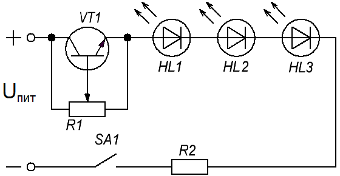
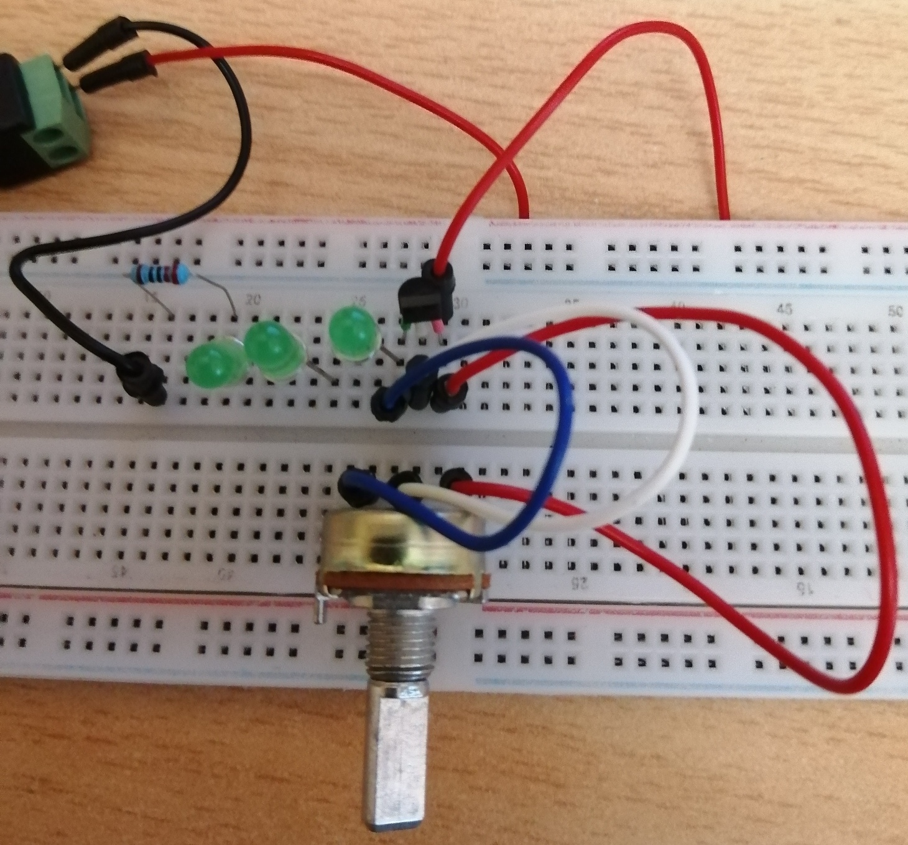

Регулятор яркости светодиодов
В данной схеме (рис. 1) резистор R1 является делителем напряжения. С помощью этого резистора задается степень «открытости» транзистора VT1, и, следовательно, ток протекающий через него и светодиоды.

Таблица 1
| Обозначение | Наименование | Номинал | Количество |
|---|---|---|---|
| HL1-HL3 | Светодиод | АЛ307 | 3 |
| R1 | Резистор переменный | 250 кОм | 1 |
| R2 | Резистор постоянный | 220 Ом / 0,25 Вт | 1 |
| SA1 | Выключатель | 1 | |
| VT1 | Биполярный транзистор | 2N2222 | 1 |
При указанных в таблице 1 номиналах элементов и напряжении питания 11,58 В в крайних положениях ручки переменного резистора были получены результаты показанные в таблице 2.
Таблица 2
| Напряжение баз-эмиттер Uбэ, В | 0 | 0,8 |
|---|---|---|
| Напряжение коллектор-эмиттер Uкэ, В | 3,77 | 0,8 |
| Свечение светодиодов | тусклое | яркое |

В зависимости от тока через светодиоды, их количества и способа соединения можно использовать другие транзисторы. При большой мощности светодиодов транзистор необходимо установить на радиатор охлаждения.
Сопротивлениe R2 нужно исключить, если в качестве светодиодов использовать светодиодную ленту, так как токоограничивающие резисторы уже имеются в ленте.
Источник
sdelaysam-svoimirukami.ru - Простейший регулятор яркости светодиодов